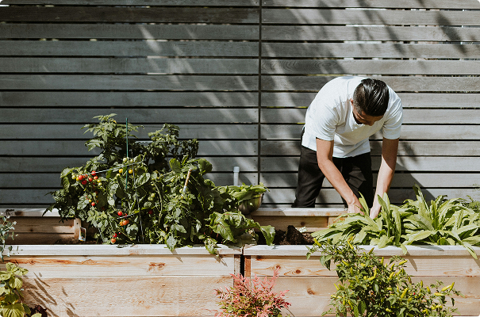

About EB Stone & Son
Organic Gardening Since 1916
Our Story
EB Stone began in 1916 when E.B. Stone started making fertilizer in San Jose, California. His innovative approach to soil nutrition quickly caught the attention of fellow farmers. The fertilizer E.B. Stone created made his fruit crops the talk of other San Jose farmers, proving the exceptional quality of his products.
Over the years, E.B. Stone expanded his product line to include soil conditioners for flowers, fruit trees, and many other plant varieties. In 1936, recognizing the agricultural potential of the region, he moved his business to the Salinas Valley to serve valley farmers and local garden centers with his growing selection of premium products.
Our Legacy
EB Stone marked its 100th year as a family-owned company in 2016, a testament to our commitment to quality and sustainability. When E.B. Stone retired in 1979, he sold his family business to the Crandalls—another family dedicated to keeping up the tradition of creating the best fertilizers and amendments for gardeners and farmers alike.
Today, the Crandall family continues to uphold the values E.B. Stone established over a century ago. We remain committed to innovation, quality, and environmental stewardship in everything we do.
Our Commitment to Sustainability
Our headquarters in Northern California incorporates two high-tech wind turbines to harness wind power. These turbines produce enough clean, renewable energy to power our entire production facility, offices, and more—demonstrating our deep commitment to reducing our environmental footprint.
We believe that creating premium organic gardening products must go hand-in-hand with protecting the planet for future generations. This philosophy guides every decision we make, from sourcing raw materials to manufacturing and distribution.
Our Values
Quality
We maintain the highest standards in product quality, using only the finest ingredients and proven formulations developed over more than 100 years.
Sustainability
Environmental responsibility is at the core of our operations, from renewable energy to sustainable sourcing and eco-friendly practices.
Innovation
We continuously improve our products and processes to meet the evolving needs of gardeners and farmers while advancing organic gardening methods.
Family Heritage
Our family-owned tradition spans over 100 years, built on a foundation of trust, integrity, and dedication to our customers.